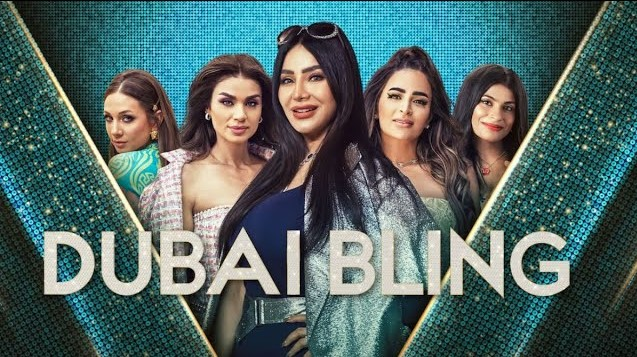

Seasons
Season 1
Dubai Bling's first season is made up of 8 episodes.
They are called:
- Habibi, Welcome to Dubai
Real estate tycoon Zeina Khoury confronts influencer Farhana Bodi about a past snub; Safa asks her husband for one more closet; LJ goes on a blind date.
- Rumour has It
Farhana throws a birthday bash; DJ Bliss considers buying himself new abs; Safa considers surrogacy; a leak shatters the circle of gossip.
- Closed Circle
A gatecrasher disrupts LJ's glamorous desert getaway; Ebraheem cracks under pressure during a pottery class; Zeina and Safa accost the whistleblower.
- Love Season
At LO's Galentine's party, Zeina drops a bombshell about her husband, Hanna; Dania opens up to DJ Bliss about her feelings; Fadie asks LJ on a date.
- Ticking Time Bomb
Zeina breaks down after work prevents her from spending time with family; Safa launches her first fashion line; Ebraheem won't let things go.
- Sail Away
In the aftermath of the big fight, the friend circle splits in two; DJ Bliss faces a tough week; Kris' family flies in from Australia for the wedding.
- Too late?
After Bliss' drama-filled boat party, Zeina makes a splash at Aydin's birthday; Kris and Brianna clash over wedding plans; LO hosts a charity auction.
- Hitched
Farhana sets out to prove her worth; LJ reaches out to her mother; Safa makes an announcement; Kris and Brianna's big day finally arrives.

Season 2
Dubai Bling's second season is made up of 8 episodes.
They are called:
- Back in Bling Town!
The gang is back; Ebraheem is getting married; Mona Kattan joins the crew; Safa has had her baby.
- Don't Mess With the Besties
As Zeina launches her company, LO invites part of the gang to go glamping in AlUla, Saudi Arabia; Bliss confronts Kris, saying something is amiss.
- To Tea, or Not to Tea?
As Ebraheem holds a ceremony with his fiancé, Danya and Bliss argue over her new business venture; LJ becomes a waitress, then spills some tea.
- Pretty Peace?
Farhana seeks love on the slopes, but things are frosty; Zeina and Safa have a heart-to-heart conversation; Fahad forks out for a "push present;" LJ has a peace party.
- Start From Scratch
Mona and Hassan give parenting a dry run; Ebraheem gears up for his big day; Bliss tries to squash a beef between Zeina, Danya and Ebraheem.
- Undercover in India
Safa goes on the prowl, hunting down her husband in Mumbai; at Mona's fragrance launch, Zeina and Ebraheem cause a stink.
- Set the Stage on Fire
Danya drops a bombshell just before Bliss headlines his biggest concert and LJ takes the stage; Farhana steps into the ring with her new love interest.
- Marry Me?
LO introduces a surprise guest; Safa lobbies for a "mommy makeover;" Mona celebrates her independence; there's a surprise to top things off.

Season 3
Dubai Bling's third season consists of nine episodes.
They are called:
- Peace, You Said?
A New Year's party brings the friends together, with everyone ready to turn over a new leaf, that is until Farhana arrives with a score to settle.
- Who's The Company?
Bliss comes to his wife's defence when the besties do not see eye to eye in business. Mahira tries to assure Mona that babies and work can coexist.
- Moment of Truth? Or Not Yet!
Safa hosts a lavish farewell party for her Lamborghini, inviting her friends to witness a teary and outlandish farewell to her material obsession.
- Turning Tables
Masks are shed at a Jwana's masquerade party when guests put their pride above their peace; tensions rise as cutting words are thrown around the table.
- A Costly Apology
Old wounds resurface when Jwana and LJ are forced to confront each other, leading to a catastrophic conversation, with Farhana right in the middle.
- Nothing Left Unsaid
Mahira reveals a teary secret with her friends, while LJ and Jwana's conflict comes to a heated head when they finally share both sides of the story.
- There's a Time for Everything!
Safa takes matters into her own hands when she mediates the trademark disagreement; Ebraheem finds new ways to get himself into trouble.
- Trust Shattered
The circle attends a restorative retreat, but Danya stays at home again; when Ebraheem speaks without thinking, Bliss is unable to forgive and forget.
- Will Time Heal?
Danya questions her faltering relationship with Ebraheem after a series of shocking betrayals; can their friendship survive this dramatic fallout?

Season 4?
It is believed by fans that this show doesn't end here, and there may be another upcoming season. Season three ends in a cliffhanger, which further proves this idea. There is no new information on this, but let's hope it really happens.